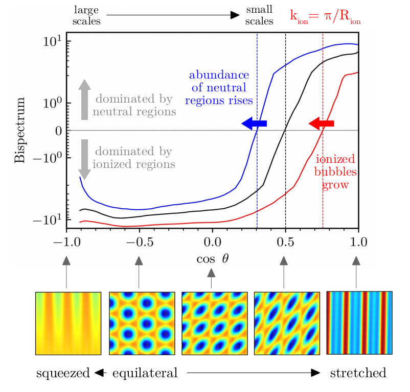
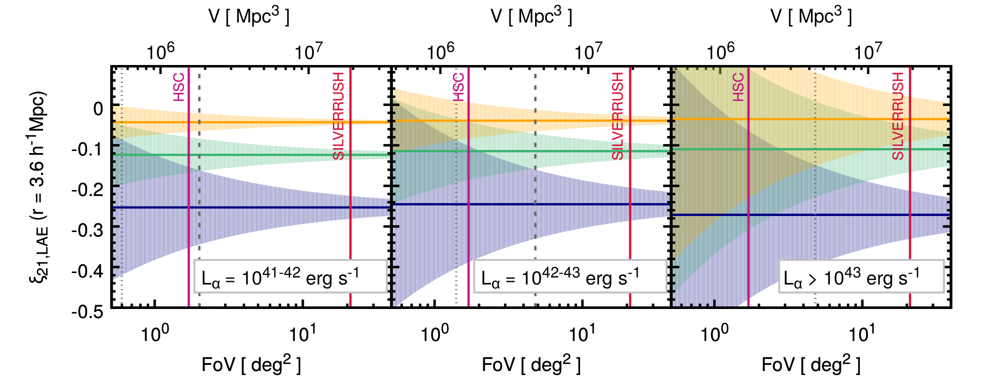
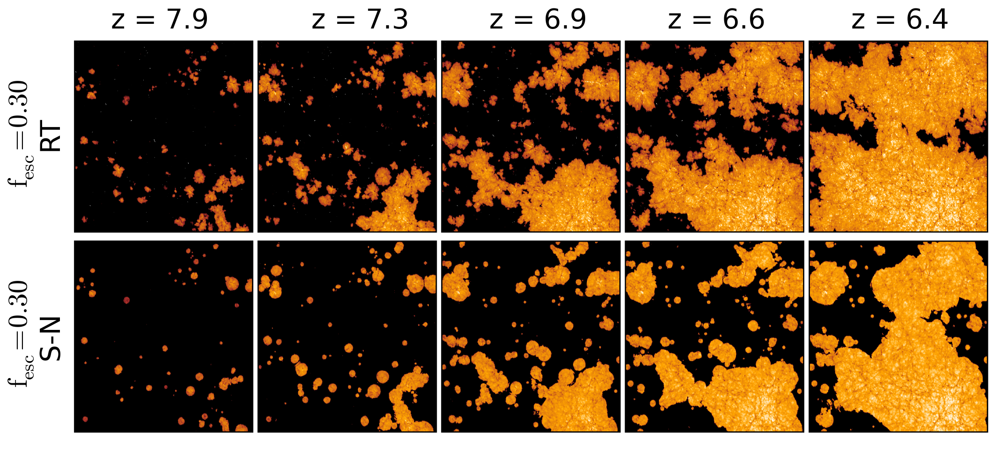
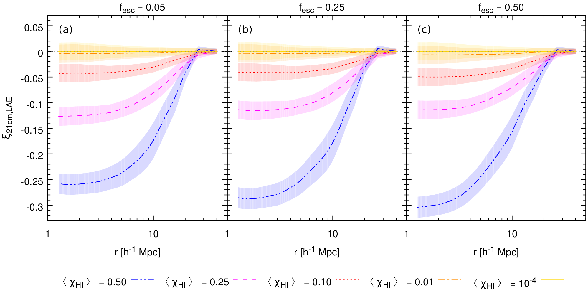

Research interests: The Epoch of Reionization
My main research interest lies in the Epoch of Reionization, the second major phase transition in the Universe, when ionizing photons from the first stars and galaxies gradually ionize the hydrogen in the intergalactic medium (IGM). Using theoretical models and numerical simulations of high-redshift galaxy evolution and reionization, I aim at finding answers to these intriguing questions:
- What were the properties of the first galaxies?
- How did reionization proceed?
- How did reionization affect the physical processes in early galaxy formation and evolution?
My models provide predictions for observables, such as the 21cm signal from the intergalactic medium, emission lines (e.g. Lyman-α) or UV radiation from high-redshift galaxies during reionization.
Research highlights
The 21cm bispectrum during reionization: a tracer of the ionization topology
(Hutter, Watkinson, Seiler, Dayal, Sinha, Croton 2020)

We analyse the link between characteristics in the 21cm bispectrum during reionization and the ionization topology by using three different reionization scenarios from Seiler et al. 2019 that differ in their trends of the ionizing escape fractions with the underlying galaxy properties (i.e. the ionizing escape fraction effectively decreasing, being constant, or increasing with halo mass). From squeezed to stretched triangles, we compute the 21cm bispectra with Polyspectrum and find the sign change in the 21cm bispectrum to be sensitive to the the size distribution of the ionized and neutral regions throughout reionization.
Astro 2020: A proposal to exploit galaxy-21cm synergies to shed light on the epoch of reionization
(Hutter et al. 2019)
This white paper outlines the benefits of synergizing WFIRST, Subaru Hyper Suprime-Cam or other >25m-class telescopes galaxy observations with SKA 21cm measurements to constrain the nature of reionization (ionization history and topology) and its sources.
The escape fraction of ionizing photons during the epoch of reionization: observability with the SKA
(Seiler, Hutter, Sinha, Croton 2019)
This paper introduces the RSAGE model that self-consistently couples the semi-analytical galaxy evolution model SAGE to my semi-numerical reionization scheme CIFOG . Furthermore, we explore how physically motivated functional forms of the escape fraction of ionizing photons from galaxies, i.e. linking the ionizing escape fraction to galaxy properties, affect the evolution of ionized hydrogen within the intergalactic medium and the ionization topology. We find that the large-scale power in the power spectrum of the 21cm signal provides the most sensitive tracer of the sizes of the larger ionized regions that upcoming 21cm surveys with SKA will detect.
Survey parameters for detecting 21cm-lae cross correlations with ska
(Hutter, Trott, Dayal 2018)

21cm-LAE cross correlations can provide a relative robust measurements of the IGM neutral hydrogen fraction during reionization, but low observational uncertainties will be key for detecting this cross correlation signal. However, the reduction of the uncertainties arising from the 21cm signal measurements and the LAE observations favour opposite survey designs. While the uncertainties in the 21cm signal detection are reduced by larger survey volumes, the shot noise arising from the finite number of LAEs decreases with the survey limiting Lyα luminosity, the faintest detectable Lyα luminosity, demanding for deeper observations. In this paper, we pursue the question of which survey design (i.e. survey volume versus limiting Lyα luminosity) would be optimal and feasible to minimise the 21cm-LAE cross correlation uncertainties.
The accuracy of seminumerical reionization models in comparison with radiative transfer
(Hutter 2018)

I have developed a modular seminumerical code that computes the time and spatially dependent ionization of neutral hydrogen, neutral and single-ionized helium in the intergalactic medium. My model accounts also for recombinations and provides different descriptions for the photoionization rate that are used to calculate the residual HI fraction in ionized regions. In this paper I compare different seminumerical reionization schemes to a radiative transfer simulation: In contrast to previous comparison projects, I do not adjust the ionizing emissivity in my seminumerical scheme to reproduce the redshift evolution of the RT simulation, but derive it directly from the RT simulation spectra. This comparison highlights the limitations of these seminumerical reionization models in constraining ionizing-emissivity sensitive parameters in galaxy formation.
Exploring 21cm-lyα emitter synergies for ska
(Hutter, Dayal, Müller, Trott 2017)

We study the signatures of reionization and ionizing properties of early galaxies in the cross-correlations between the 21 cm emission from the spin-flip transition of neutral hydrogen and the underlying galaxy population. With LAEs occupying the densest and most-ionized regions, the anti-correlation between the LAEs and the 21 cm emission is the strongest and provides an indicator of the ionization level of the intergalactic medium that will be detectable with SKA. We also find that detecting a lower 21cm brightness temperature (by about 2-10 mK) in the densest regions (≳2 arcmin scales) hosting LAEs, compared to lower-density regions devoid of LAEs, is a measurable tracing an inside-out reionization topology.